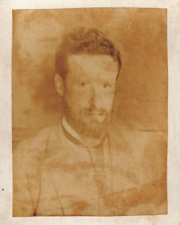
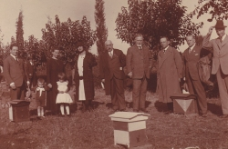
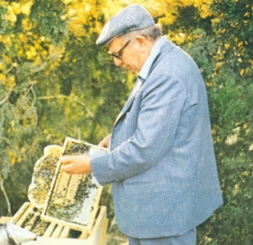

Pianamiele: 1世紀以上の間、ミツバチと蜂蜜
|  |
1903年、ジャン・ピエトロ・ピアナ教授は、ミラノ大学を離れ、カステル・サン・ピエトロの丘陵地帯に移動しました。 彼の息子Gaetano（自然を愛していた）は、イタリア産のミツバチがヨーロッパのものよりも従順でより生産的であることを理解するミツバチを研究し始めた。 だから彼は蜂を飼い始め、すぐに彼の女王は有名になり、イタリア、ヨーロッパ、海外でどこでも要求されました。 |
|---|---|
|  |
Apicoltura Pianaは、フルーツの木や芳香のハーブで囲まれたCastel San Pietroの丘の中で生まれました。 第二次世界大戦後、ガエターノの息子であるピアナブラザーズが生産を再開し、拡大した。最初の50年代にApicoltura Pianaはすでにイタリアの有力な生産者のひとりであった：女王の飼育、蜂蜜生産、蜜蝋生産。 |

Giulio Pianaの能力と直感のおかげで、ビジネスは拡大し、パッケージも含まれていました。
70年代、Apicoltura PianaはBee Keepingの参考になりました。 90年代のマーケットプレイスと利益は上がり、Apicoltura Pianaは今日の市場のトップに達しています。